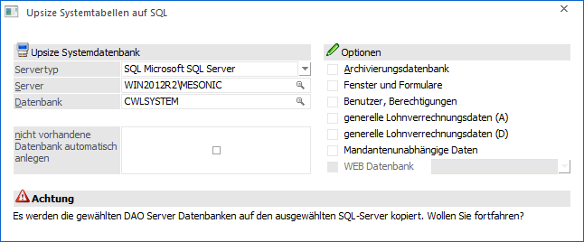
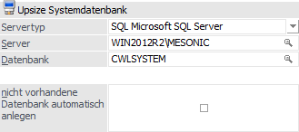

Über den Menüpunkt
1 WinLine ADMIN
1 System
1 Upsize System auf SQL-Server
können Systemdatenbanken, die als SRV-Dateien (DAO) vorhanden sind, auf den SQL-Server übertragen / transferiert werden.
Es gibt mehrere Arten von Datenbereichen, die auf den SQL-Server transferiert werden können:
ü Systemdaten
Dieses sind Daten,
welche für den Betrieb des Programms notwendig sind (Masken, Formulare,
benutzerspezifische Einstellungen, usw.).
ü mandantenunabhängige Daten
Das
sind Daten, die für alle Mandanten gelten. Dazu zählen Listbilder für den
WinLine Listgenerator, Vorlagen (für EXIM), Postleitzahlenstamm und
Bankleitzahlenstamm.
ü WEB Datenbank
Hier werden alle
relevanten Einstellungen, die mandantenunabhängig sind, zur WEBEdition
gespeichert.

Upsize Systemdatenbank

Ø Servertyp
Aus der Auswahlliste muss der Typ des SQL-Servers gewählt werden, auf welchem die Daten übertragen werden sollen. Dabei stehen die folgenden Optionen zur Verfügung:
ü SQL - Microsoft SQL Server
Es
wird eine neue Datenbank für einen Microsoft SQL Server angelegt.
ü POS - PostgreSQL
Die Funktion
wird aktuell nicht unterstützt.
Ø Server
Hier muss der Name des Computers eingegeben werden, auf dem der SQL-Server installiert ist (hier "WIN2012R2"). Sollte am SQL-Server mit Instanzen gearbeitet werden, so ist auch die Angabe der Instanz notwendig (hier "MESONIC").
Durch Drücken der F9-Taste kann nach allen im Netzwerk vorhandenen SQL-Servern gesucht werden.
Hinweis
Sollte per F9-Taste der gewünschte SQL-Server nicht angeboten werden, so könnte eine Ursache sein, dass der sogenannte "SQL Server-Browser-Dienst" nicht installiert oder aktiviert wurde. In solch einem Fall müsste der Server manuell erfasste werden.
Achtung
Der Name des SQL-Servers darf keinen Bindestrich „-“ enthalten (bei SQL-Servernamen mit Bindestrich kann es z.B. zu Problemen bei Sicherungen bzw. Rücksicherungen o.ä. kommen)!
Ø Datenbank
Hier wird der Name der Datenbank eingegeben, in welche die Systemtabellen kopiert werden sollen. Durch Drücken der F9-Taste kann nach allen Datenbanken gesucht werden, die am zuvor eingegebenen Server bereits vorhanden sind.
Ø nicht vorhandene Datenbank automatisch anlegen
Ist diese Option aktiviert, dann wird geprüft, ob die angegebenen Datenbank am SQL-Server vorhanden ist. Ist dieses nicht der Fall, dann wird diese automatisch angelegt.
Optionen

In diesem Bereich kann definiert werden, welche Systemtabellen auf den SQL-Server transferiert werden sollen. Dabei müssen die jeweils angeführten Dateien vorhanden sein, damit das Upsize durchgeführt werden kann. Ist eine der benötigten Datei nicht vorhanden, wird eine Fehlermeldung ausgegeben. Dabei besteht auch die Möglichkeit, die Tabellen selektiv auf den Server zu kopieren:
Ø Archivierungsdatenbank
Wenn diese Option aktiv ist, wird der Inhalt der Datei MESOARC.SRV auf den SQL-Server kopiert.
Ø Fenster und Formulare
Wenn diese Option aktiv ist, wird der Inhalt der MESOPDB.SRV auf den SQL-Server kopiert.
Ø Benutzer, Berechtigungen
Wenn diese Option aktiv ist, wird der Inhalt der MESOSRV.SRV auf den SQL-Server kopiert.
Ø generelle Lohnverrechnungsdaten (A)
Wenn diese Option aktiv ist, dann wird der Inhalt der mesolohn0.SRV auf den SQL-Server kopiert. Diese Option kann nur bei Einsatz des WinLine LOHN für Österreich aktiviert werden (wenn die entsprechende Lizenz vorhanden ist).
Ø generelle Lohnverrechnungsdaten (D)
Wenn diese Option aktiv ist, dann wird der Inhalt der mesolohD0.SRV auf den SQL-Server kopiert. Diese Option kann nur bei Einsatz des WinLine LOHN für Deutschland aktiviert werden (wenn die entsprechende Lizenz vorhanden ist).
Ø Mandantenunabhängige Daten
Wenn diese Option aktiv ist, wird der Inhalt der MESOCOMP.SRV auf den SQL-Server kopiert.
Ø WEB Datenbank
Wenn diese Option aktiviert wird, dann kann aus der nachfolgenden Auswahllistbox die WEBEdition gewählt werden, für welche WEBEdition das Upsize durchgeführt werden soll.
Buttons

Ø Ok
Durch Anklicken des Buttons "Ok" bzw. der Taste F5 werden die ausgewählten Systemtabellen auf den Microsoft SQL-Server übertragen / transferiert.
Ø Ende
Durch Drücken des Buttons "Ende" bzw. der Taste ESC wird das Fenster geschlossen.